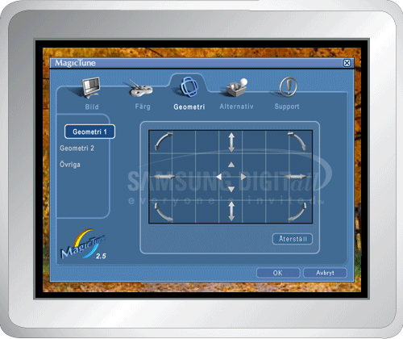

|
|
 |
MagicTune möjliggör en snabb bildskärmsinställning och ger dig även möjlighet att enkelt spara och använda de bildskärmskonfigurationer som passar just dig bäst.
- OSD-läget kan förefalla vara inkonsekvent med förklaringen i bruksanvisningen beroende på specifikationen för varje bildskärm.
|
|
|
OSD-läget gör det enkelt átt ändra inställningar på alla bildskärmar. Alla flikar överst i kontrollfönstret visar (när de är markerade)
allmänna beskrivningar för undermenyns poster för inställning. Varje markerad flik visar en menylista. För snabbjustering av bildskärmsinställningar, ger OSD-läget enkel och
smidig åtkomst till alla flikar och undermenyposter.
|
OK
|
Verkställer eventuella ändringar du gjort och avslutar MagicTune.
|
|
Återställ
|
Återställer de bildskärmsvärden som
visas i det aktiva kontrollfönstret till tillverkarens rekommenderade
värden .
|
|
Avbryt
|
Avslutar MagicTune utan att verkställa
gjorda ändringar. Om du inte har gjort några ändringar i
kontrollfönstret, händer inget när du klickar på "Avbrytl" .
|

|
Låter användaren justera skärminställningarna till
önskade värden.
|
Ljusstyrka
|
Gör hela skärmen ljusare eller mörkare. Bilddetaljer i de mörka partierna kan gå förlorade ifall ljusstyrkan är
felaktigt inställd. Justera ljusstyrkan till bästa möjliga
visningsförhållanden.
|
|
Kontrast
|
Justerar skillnaden i ljusstyrka mellan ljusa och mörka partier av
skärmen. Bestämmer bildens tydlighet.
|
|
MagicBright™
|
Tryck en gång till på MagicBright-knappen och välj önskat läge.
- fyra olika lägen.
- Text: För dokumentation eller arbeten med mycket text.
- Internet: För arbete med en blandning av bilder som t ex text och grafik.
- Spel: För att titta på rörliga bilder som t ex ett spel.
- Nöje: För att titta på rörliga bilder som t ex DVD eller VCD.
- Text: För dokumentation eller arbeten med mycket text.
- Internet: För arbete med en blandning av bilder som t ex text och grafik.
- Nöje: För att titta på rörliga bilder som t ex DVD eller VCD.
|
|
Justerar "värmen" i bildskärmens bakgrund eller bildfärg.
|
Färgton
|
ärgtonen kan ändras.
- Varm - Normal - Sval
- Anpassad
|
|
färgkontroll
|
Justerar bildskärmens bildfärg.
Du kan ändra bildskärmsfärgen till önskad färg.
|
Justerar värdena för Position, Size (storlek) och Rotation.

|
Geometri 1
|
Justerar värdena för Position, Size (storlek) och Rotation.
- Position
- Storlek
- Rotation
|
|
Geometri 2
|
Justerar värdena för Pincushion ,
Pinbalance, Trapets och Parallell.
- Pincushion
- Pinbalance
- Trapets
- Parallell
|
|
Övriga
|
Justerar värdena för moaré, Avmagnetisering, Sidepin och Pinbalance.
- moaré
- Avmagnetisering
- Sidepin,
övre hörnet
- Sidepin,
nedre hörnet
- Pinbalance,
övre hörnet
- Pinbalance,
nedre hörnet
|
Du kan konfigurera MagicTune med följande alternativ.
|
Inställning
|
Laddar dialogrutan Inställning. De prefenser som används har ett "V" i kryssrutan. Du stänger av en preferens genom att placera markören över rutan och
klicka.
- Aktivera
uppgiftsmeny.
- Du öppnar MagicTunes
menyer genom att klicka på ikonen på [Aktivera
uppgiftsmeny].
Menyerna visas inte om [Enable System Tray] (aktivera aktivitetsfält) är
avmarkerat i [Alternativ] ' [Basic Settings] (grundinställningar).
- Välj språk - Det språk du valt påverkar endast OSD-menyn.
|
Visar tillgångs-ID och programmets versionsnummer, och låter dig använda hjälpfunktionen.
|
Hjälp
|
Gå till MagicTunes webbplats eller klicka för att öppna hjälpfilerna (bruksanvisning) om du behöver hjälp med att installiera eller köra MagicTune. Bruksanvisningen öppnas i ett grundläggande bläddringsfönster.
|
|
Användar-ID
|
Öppnar ett fönster med bildskärmsinfo som anger bildskärmens tillverkningsdatum.
|
|
Version
|
Visar versionsnummer för MagicTune.
|
|

 Definition av Bild
Definition av Bild OSD-läge
OSD-läge